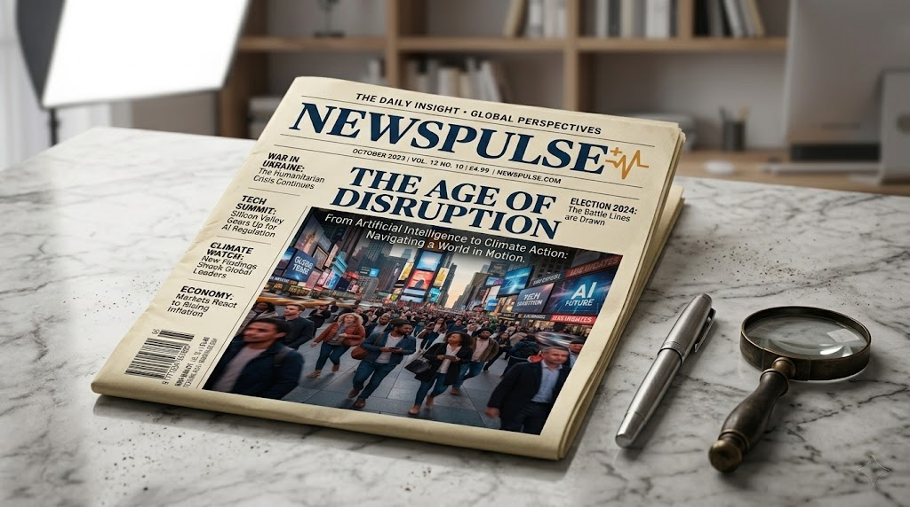

News Pulse+
News Pulse+ is a modern digital news project designed to present world news, politics, business, entertainment, sport, and viral stories in a cleaner and more engaging way. The work focuses on strong visual identity, category-led browsing, and an editorial layout that feels current and easy to explore.

Project Story
This project was built to make online news feel more organised and more visually compelling. Instead of a plain list of articles, the design highlights featured stories, topic sections, and a stronger front-page identity.
Challenge
Build a news platform that can cover multiple topics while still feeling clear, stylish, and easy for readers to move through.
Approach
Use a modern homepage, bold section navigation, and card-based storytelling to create a smoother reading and discovery experience.
Outcome
A more premium-looking news product that presents stories with stronger structure, clearer hierarchy, and better visual appeal.
Project Snapshot
This summary block shows the main purpose of the work and why it fits into the portfolio as a front-end and digital product piece.
What The Project Shows
The page demonstrates more than layout work. It shows how design choices can shape the way users explore information-heavy content.
Key Strengths
- Clear front-page branding with a recognisable visual identity
- Topic-led navigation for faster movement across content sections
- Featured story layouts that make the homepage feel more dynamic
- Cleaner presentation that gives the platform a more professional tone
Why It Matters
For employers and collaborators, this project shows a stronger eye for digital presentation, user flow, and how to turn a content-heavy idea into a more engaging front-end product.
View The Project
The live intro page is linked directly so the full News Pulse+ experience can be opened from this case study.
Open News Pulse+ to view the project page.